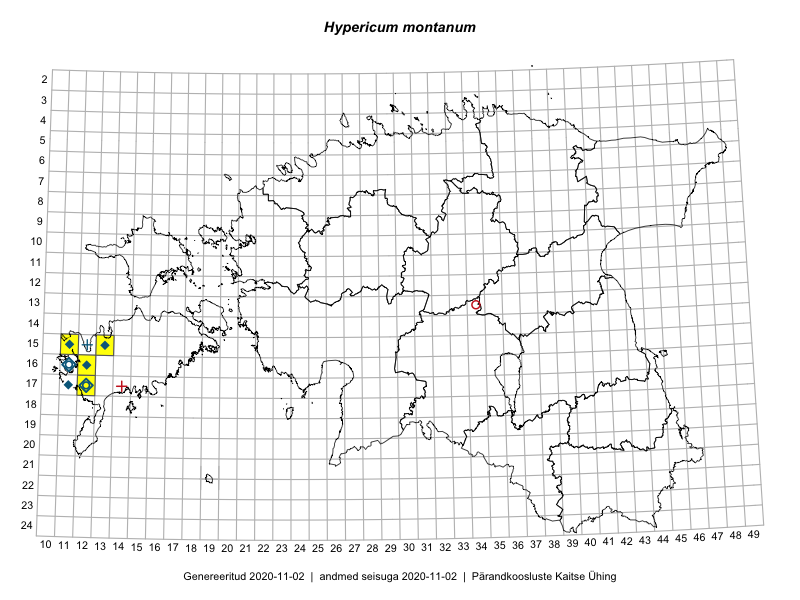

Hypericum montanum
Uuendatud: 2016-12-01
Kaardile koondatud taksonid: Hypericum montanum L.

Kaart põhineb 12 kirjel.
Viited andmebaasikirjetele
- Toomas Kukk: 2015-08-05: 16-12: GPS punkt
- Mari Reitalu: 2015-06-19: 17-12: ala
- Mari Reitalu: 2015-06-19: 17-12: GPS punkt
- Mari Reitalu: 2015-06-07: 17-12: ala
- Mari Reitalu: 2015-06-07: 17-12: GPS punkt
- Mari Reitalu: 2015-07-02: 17-12: ala
- Mari Reitalu: 2015-07-02: 17-12: GPS punkt
- Mari Reitalu: 2015-09-04: 16-12: ala
- Mari Reitalu: 2015-09-04: 16-12: GPS punkt
- Mari Reitalu, Oliver Parrest: 2015-07-21: 15-13: ala
- Mari Reitalu: 2015-07-21: 15-13: GPS punkt
- Mari Reitalu, Oliver Parrest: 2015-07-21: 15-13: GPS punkt